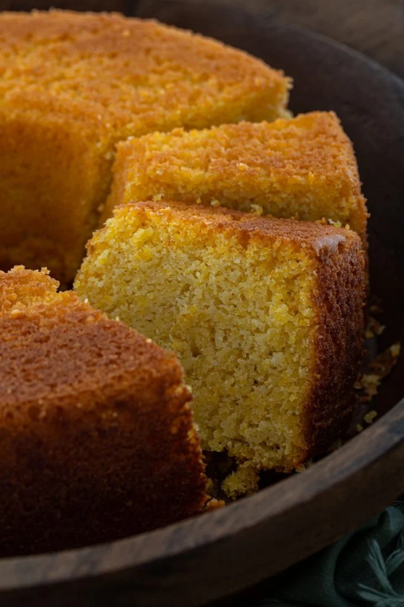

Brazilian Sweet Corn Cake

Delicious Omelette Soufflé
About the Bolo de Milho
There are probably more corn cake recipes than there are people in Brazil.
The variations include cakes made of fubá (cornmeal), fresh corn, canned
corn, with coconut, with cheese, with guava, and so on. You could eat a
different corn cake every day and never get sick of it!
It is super moist, sweet and full of corn flavor! And while the recipe
asks for coconut (both coconut milk and shredded coconut), the flavor is a
lot more subtle than you would think.
Ingredients
- 2 1/2 cups corn kernels (aprox 3 ears)
- 1 cup whole milk
- 1/2 cup coconut milk
- 2 cups cornmeal
- 1 1/2 cups sugar
- 3/4 cup oil
- 4 large eggs
- 1 cup shredded coconut (unsweetened)
- Pinch of salt
- 1 tablespoon baking powder
Steps
-
Preheat oven to 350 degrees F and adjust the oven rack to the middle
position. Butter and flour a 10-inch angel food cake pan. Reserve.
-
Combine the corn kernels and the milk in the jar of a blender and blend
until smooth.
-
Add the coconut milk, cornmeal, sugar, oil, eggs, coconut and salt.
Pulse until combined.
-
Add the baking powder and pulse one or two times, just to incorporate
into the batter.
-
Pour the batter into the prepared cake pan, and bake for 50 minutes or
until a toothpick inserted in the center comes out clean or with a few
moist crumbs.
-
Remove from the oven and immediately run a thin knife around the edges
to loosen it. Let it cool slightly, about 20 minutes, then turn the cake
into a cooling rack to finish cooling.
- Slice and serve! Enjoy!